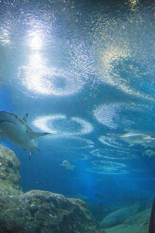
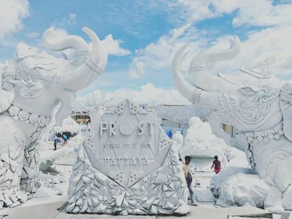
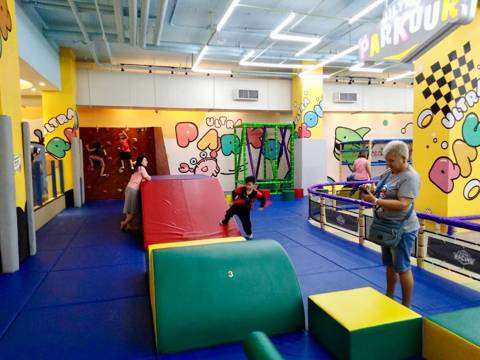
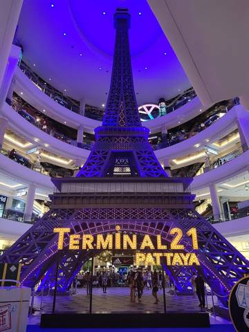
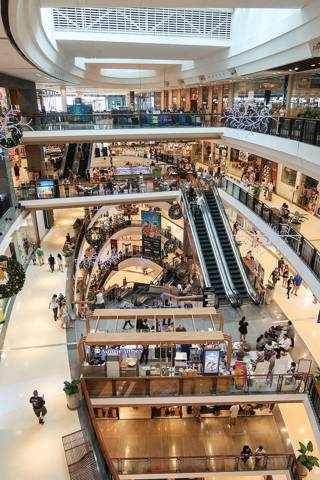
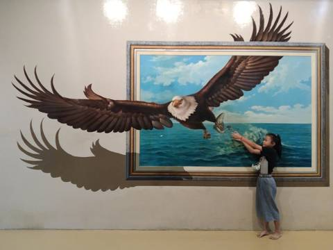
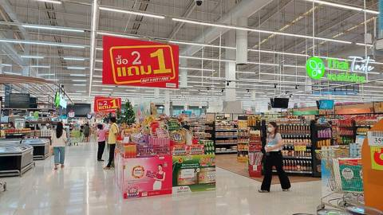
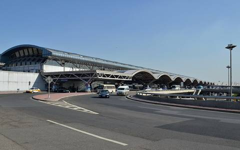

🏨 Детский клуб Little Birds
💰 бесплатно, с 2 лет
самый простой вариант: никуда не ехать
Нажмите на день — откроется план по часам. Ребёнку 2 года, поэтому 12:30–15:00 — дневной сон, выезжаем утром. С 26 по 30 октября Денис работает ≈ 11:00–19:00 (7–15 МСК): утро и вечер — вместе. Время примерное, конец октября — после обеда бывают ливни.

Иркутск → Пекин, ночь в отеле у аэропорта
🎒 Взять с собой: паспорта, юани наличными на Пекин

Пекин → Бангкок → Паттайя, первый вечер у бассейна
🎒 Взять с собой: TDAC (QR-код) в телефоне у каждого

Едем в будний четверг: в праздник 23.10 на острове будет толпа
🎒 Взять с собой: детский жилет; наличные мелкими на паром и сонгтэо

Праздник (день Чулалонгкорна) — много местных, поэтому отдыхаем у отеля

Сад, динозавры, шоу; вечером буфет в отеле и огненное шоу

Храм утром, обед в Наклуа, закат на Пратамнаке
🎒 Взять с собой: закрытые плечи и колени у всех — утром в храме и вечером на Big Buddha

Утром всей семьёй на рынок, потом Денис работает, остальные — бассейн и детский клуб
💻 Денис: утром с семьёй, 11:00–19:00 работает

Му Денг, жирафы с рук, слоны — едем к открытию
💻 Денис: работает 11:00–19:00, вечером ужин вместе
🎒 Взять с собой: паспорт — если берёте гольф-кар (залог)

Самый чистый пляж рядом — на территории ВМФ. Не забыть паспорта!
💻 Денис: работает 11:00–19:00, вечером ужин вместе
🎒 Взять с собой: паспорта всем — без них не пустят на базу ВМФ

Aquaverse в 5–10 минутах от отеля (по средам он закрыт — поэтому четверг)
💻 Денис: работает 11:00–19:00, вечером ужин вместе
🎒 Взять с собой: плавательные подгузники

Всё рядом друг с другом — утром можно всей семьёй
💻 Денис: утром с семьёй, в 10:30 на Bolt в отель (≈ 15 мин), 11:00–19:00 работает, вечером на рынке со всеми

Сувениры, сборы, прощальный ужин и огненное шоу

Ранний выезд, вылет в 11:25
🎒 Взять с собой: паспорта; мелочь на платные дороги 200–300 бат
В конце октября дождь обычно идёт ливнем на 1–2 часа после обеда или вечером (≈ 14–17 ч); на весь день — редко. Поэтому пляж и бассейн — утром, а крытые места держим на вторую половину дня. После ливня бывают лужи и подтопленные дороги.
💰 бесплатно, с 2 лет
самый простой вариант: никуда не ехать







Не советуем: Ripley's (страшно для двухлетки), Dolphin World (дельфины в неволе), а Mini Siam, овечья ферма и плавучий рынок — под открытым небом. Время в пути примерное, часы и цены лучше проверить в Google Maps.
⏰ Время везде местное. Иркутск и Пекин — одно время, в Бангкоке на 1 час меньше. Туда ≈ 8 часов в воздухе (плюс ночь в Пекине), обратно — 6,5 часа прямым рейсом.


ELONG R.YUN (Beijing Capital Airport Branch), 630 м от аэропорта.
Для таксиста: 艺龙瑞云酒店(北京首都机场新国展店)
Шаттл бесплатный — заказать заранее в WeChat отеля: ELONGHOTEL001
21.10 – 01.11 · 2 номера с видом на море · завтраки включены
Заезд после 15:00, выезд до 12:00
TDAC — электронная карта прибытия в Таиланд, на каждого из 5 человек, включая ребёнка, за 3 дня до прилёта (18–20 октября): tdac.immigration.go.th
Ребёнка нет в брони отеля — написать в отель: ребёнок 2 года, кроватка, бесплатный ли завтрак.
Залог в отеле: 1000 THB в день, лучше наличными.
Утро 01.11: выезд в 06:00–06:30, накануне попросить breakfast box.
загружаю курс…